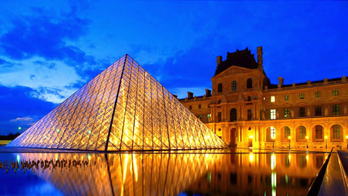

MUSEU DO LOUVRE | PARIS, FRANÇA
Louvre ou Museu do Louvre (em francês: Musée du Louvre) é o maior museu de arte do mundo e um monumento histórico em Paris, França. Um marco central da cidade, está localizado na margem direita do rio Sena, no 1º arrondissement (distrito) da cidade. Aproximadamente 38 mil objetos, da pré-história ao século XXI, são exibidos em uma área de 72 735 metros quadrados.[1] Em 2019, o Louvre recebeu 9,6 milhões de visitantes, o que o torna o museu mais visitado do mundo.
O museu está instalado no Palácio do Louvre, originalmente construído como o Castelo do Louvre nos séculos XII e XIII durante o reinado de Filipe II. Restos da fortaleza são visíveis no porão do museu. Devido à expansão urbana, a fortaleza acabou perdendo sua função defensiva e, em 1546, Francisco I a converteu na residência principal dos reis franceses.[2] O edifício foi ampliado várias vezes para formar o atual Palácio do Louvre. Em 1682, Luís XIV escolheu o Palácio de Versalhes como sua casa, deixando o Louvre principalmente como um local para exibir a coleção real, incluindo, a partir de 1692, uma coleção de antigas esculturas gregas e romanas.
História
O Palácio do Louvre, que abriga o museu, foi iniciado como uma fortaleza por Filipe II no século XII para proteger a cidade dos soldados ingleses que estavam na Normandia. Restos deste castelo ainda são visíveis na cripta do museu.[5] Não se sabe se esse foi o primeiro edifício naquele local; é possível que Filipe tenha modificado uma torre pré-existente. Segundo a autoridade autorizada Grand Larousse encyclopédique, o nome deriva de uma associação com o esconderijo de caça ao lobo (do latim: lupus).[6][7] No século VII, St. Fare, uma abadessa de Meaux, deixou parte de sua "vila chamada Luvra, situada na região de Paris", para um mosteiro,[8] mas esse território provavelmente não correspondia exatamente ao local moderno.
O Palácio do Louvre foi alterado frequentemente durante a Idade Média. No século XIV, Carlos V converteu o edifício em residência e, em 1546, Francisco I renovou o local no estilo do renascimento francês.[9] Francisco adquiriu o que se tornaria o núcleo do acervo do Louvre, como a obra Mona Lisa de Leonardo da Vinci.[10] Depois de Luís XIV escolher Versalhes como sua residência em 1682, as reformas desaceleraram; no entanto, a mudança permitiu que o Louvre fosse usado como residência para artistas, sob patrocínio real.
Quatro gerações da família Boulle receberam o patrocínio real e residiram no Louvre na seguinte ordem: Pierre Boulle, Jean Boulle, André-Charles Boulle e seus quatro filhos (Jean-Philippe,[13] Pierre-Benoît (c. 1683–1741), Charles-André (1685-1749) e Charles-Joseph (1688-1754)), depois dele. André-Charles Boulle (1642-1732[14]) é o marceneiro francês mais famoso e o artista de destaque no campo da marchetaria[15][16] também conhecido como "embutimento".[17] Boulle foi "o mais notável de todos os marceneiros franceses".
Ele foi recomendado para Luís XIV da França, o "Rei Sol", por Jean-Baptiste Colbert (1619-1683), que o classificou como o "o artesão mais habilidoso em sua profissão". Antes que o incêndio de 1720 as destruísse, André-Charles Boulle realizou obras de arte inestimáveis no Louvre, incluindo quarenta e oito desenhos de Rafael.
Revolução Francesa
Durante a Revolução Francesa, o Louvre foi transformado em museu público. Em maio de 1791, Assembleia Nacional declarou que o Louvre seria "um lugar para reunir monumentos de todas as ciências e artes".[20] Em 10 de agosto de 1792, Luís XVI foi preso e a coleção real no Louvre tornou-se propriedade nacional. Por medo de vandalismos ou roubos, em 19 de agosto, a Assembleia Nacional declarou como urgente a preparação do museu. Em outubro, um comitê para "preservar a memória nacional" começou a montar a coleção para exibição.
Abertura
O museu foi inaugurado em 10 de agosto de 1793, o primeiro aniversário da morte da monarquia. O público recebeu acesso gratuito três dias por semana, o que foi "percebido como uma grande conquista amplamente apreciada".[24] A coleção apresentou 537 pinturas e 184 objetos de arte. Três quartos foram extraídos das coleções reais, o restante de emigrados confiscados e propriedade da Igreja (biens nationaux).[25][26] Para expandir e organizar a coleção, a República dedicou 100 mil libras por ano ao acervo.[20] Em 1794, os exércitos revolucionários da França começaram a trazer peças do norte da Europa, aumentadas após o Tratado de Tolentino (1797) por obras do Vaticano, como Laocoonte e Seus Filhos e Apolo Belvedere, para estabelecer o Louvre como museu e como "sinal de soberania popular".
Os primeiros dias foram agitados; artistas privilegiados continuavam morando em residências e pinturas não identificadas eram penduradas "quadro a quadro, do chão ao teto".[25] A estrutura em si foi fechada em maio de 1796 devido a deficiências estruturais. Reabriu em 14 de julho de 1801, organizada cronologicamente e com nova iluminação e colunas.
Século XXI
O Museu do Louvre contém mais de 380 mil objetos e exibe 35 mil obras de arte em oito departamentos curatoriais com mais de 60 600 metros quadrados dedicado à coleção permanente.[52] O Louvre exibe esculturas, objetos de arte, pinturas, desenhos e achados arqueológicos.[46] É o museu mais visitado do mundo, com média de 15 mil visitantes por dia, 65 por cento dos quais são turistas estrangeiros.
Depois que os arquitetos Mario Bellini e Rudy Ricciotti venceram uma competição internacional para criar suas novas galerias de arte islâmica, o novo pavilhão de 3 mil m²[54] acabou sendo inaugurado em 2012, consistindo em espaços interiores no térreo, encimados por um telhado ondulado dourado (formado por quase 9 mil tubos de aço que formam uma teia interior) que parece flutuar no pátio neoclássico de Visconti, no meio da ala sul do Louvre.[55] As galerias, que o museu esperava abrir em 2009, representam a primeira grande intervenção arquitetônica no Louvre desde a adição da pirâmide de vidro de I. M. Pei em 1989.
O Louvre é de propriedade do governo francês; no entanto, desde os anos 1990, tornou-se mais independente.[53][58] Desde 2003, o museu é obrigado a gerar fundos para projetos.[59] Em 2006, os fundos do governo haviam caído de 75 por cento do orçamento total para 62 por cento. Todos os anos, o Louvre agora levanta tanto quanto recebe do Estado francês, cerca de 122 milhões de euros. O governo paga pelos custos operacionais (salários, segurança e manutenção), enquanto o restante - novas alas, reformas, aquisições - depende do financiamento do próprio museu.[60] Outros 3 a 5 milhões de euros por ano são arrecadados pelo Louvre a partir de exposições oferecidas para outros museus, enquanto o museu anfitrião fica com o dinheiro do ingresso. Quando o Louvre se tornou um ponto de interesse no livro O Código Da Vinci e no filme de 2006 baseado no livro, o museu ganhou 2,5 milhões de dólares, permitindo filmar em suas galerias.[61][62] Em 2008, o governo francês forneceu 180 milhões de dólares dos 350 milhões de dólares anuais do orçamento do Louvre; o restante veio de contribuições privadas e venda de ingressos.
Coleção
Antiguidade egípicia
O departamento, composto por mais de 50 mil peças,[80] inclui artefatos das civilizações do Nilo que datam de 4000 a.C. até o século IV d.C. A coleção, entre as maiores do mundo, apresenta uma visão da vida egípcia que abrange o Egito Antigo, o Império Médio, o Império Novo, a arte copta e os períodos romano, ptolemaico e bizantino.
As origens do departamento estão na coleção real, mas foi aumentada pela viagem expedicionária de Napoleão em 1798 com Dominique Vivant, o futuro diretor do Louvre.[80] Depois que Jean-François Champollion traduziu a Pedra de Roseta, Carlos X decretou a criação de um departamento de antiguidades egípcias. Champollion assessorou a compra de três coleções, formadas por Edmé-Antoine Durand, Henry Salt e Bernardino Drovet; essas adições adicionaram 7 mil obras ao acervo. O crescimento continuou por meio de aquisições de Auguste Mariette, fundador do Museu Egípcio no Cairo. Mariette, após escavações em Mêmfis, enviou caixas de achados arqueológicos, incluindo O Escriba Sentado.
Antiguidade do Oriente Proximo
Antiguidades do Oriente Próximo, o segundo mais novo departamento, data de 1881 e apresenta uma visão geral da civilização do Oriente Próximo e dos "primeiros assentamentos", antes da chegada do Islã. O departamento está dividido em três áreas geográficas: o Levante, a Mesopotâmia (Iraque) e a Pérsia (Irã). O desenvolvimento da coleção corresponde a obras arqueológicas, como a expedição de Paul-Émile Botta em 1843 a Khorsabad e a descoberta do palácio de Sargão II.[81][83] Essas descobertas formaram a base do museu assírio, o precursor do departamento de hoje.
Antiguidades gregas, etruscas e romanas
O departamento grego, etrusco e romano exibe peças da bacia do Mediterrâneo que datam do neolítico ao século VI.[88] A coleção se estende desde o período das Cíclades até o declínio do Império Romano. Este departamento é um dos mais antigos do museu; ele começou com arte real apropriada, algumas das quais foram adquiridas sob o reinado de Francisco I.[81][89] Inicialmente, a coleção era focada em esculturas de mármore, como a Vênus de Milo. Obras como o Apolo Belvedere chegaram durante as Guerras Napoleônicas, mas essas peças foram devolvidas após a queda de Napoleão I em 1815. No século XIX, o Louvre adquiriu outras obras, como bronzes como o Borghese Vase da Biblioteca Nacional da França.